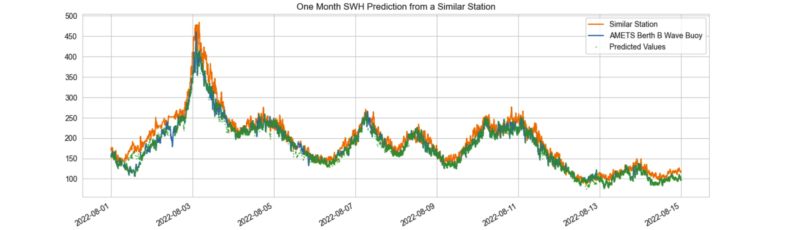
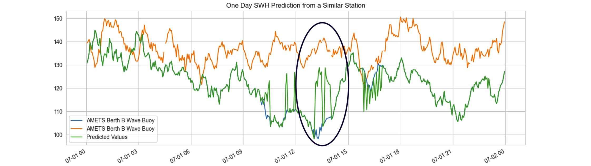

In this section, we focus on three steps of data cleaning and the corresponding Python code for this segment is available here.
- Part I: Manage the Data Gaps
- Part II: Handle Mising Values
- Part III: Standardize the Datetime Index
Figure 1: Missing Values Matrix on the Whole Dataset
Analyze missing values
Before we filter the data for the target station, we visualize the entire dataset's missing values to identify any eossible pattern within the data gaps. As the missing values matrix in Figure 1 shows, the missing value patterns appear consistent for PeakPeriod, PeakDirection, UpcrossPeriod, and SWH variables. Definition of these variables suggests that in the absence of recorded significant wave height (SWH), corresponding values would also be absent. Additionally, Hmax and THmax exhibit identical patterns, MeanCurDir and MeanCurSpd also follow the same missing data patterns, which is coherent considering their respective definitions too.
In EDA Section we discovered that there is no record for MeanCurDir, MeanCurSpd, and SeaTemp variables at the target station since these variables are recorded by an instrument distinct from the one employed at our target station. We also found in the heatmap that these variables do not have a significant correlation with the target variable SWH, therefore we do not consider it beneficial to incorporate them from the recorded stations into the target station data. While we don't intend to use these variables for our training, we will retain them during the data cleaning process for future exploration. Filtering the data to the target station changes the missing values matrix to Figure 2 for our target station.
Figure 2: Missing Values Matrix for "AMETS Berth B Wave Buoy" station
The dataset has about 500k entries for the selected station of which 1% are missing SWH and its associated features.aaaaa Around 89% of the entire dataset's missing values within the variables Hmax and THmax.
Part I: Manage The Data Gaps
The missing values reported above do not include the three time periods during which data was not recorded. This is because for these gaps, there are no index rows present in the dataset; instead, we observe a noticeable jump in the datatime index column.
There are four missing time periods including:
- a 55 days period in 2020,
- a 10 days period in 2020,
- a 47 days period in 2022,
- a 1 and a half days period in 2022.
- For 2020 12-days gap, we'll skip data to the end of this gap. We have a lot of data and the amount of data before this gap is very small (0.04% of data).
- For 2022 48-days gap and 2-days gap, we'll build a machine learning model to predict missing values based on the values of the similar station.
Figure 3: SWH at the target station vs. SWH at its similar station. The two series are aligned with slight difference. The missing periods are dispalyed by showing data only at the similar stations (blue line). Training a model to capture the difference between the two stations will give us a good estimate for the missing parts in the target station.
A decision tree was employed for training, using the time series data from a comparable station. This approach enabled the model to effectively discern the patterns and variations between the two time series, leading to a predictions for the data gap in our target station. Figure 4, 5 and 6 visually depict the results, illustrating how the utilization of a machine learning technique offers a more robust solution for filling the missing gap compared to a straightforward import of values from the analogous station.
Given that this model plays a relatively minor role in the project, specifically focused on filling the missing data gap, we opted for a broad prediction approach without diving into detailed model evaluation. A general assessment of the model's performance is depicted in the upcoming figures.
Figure 4: Predicted SWH time series from similar station "AMETS Berth A Wave Buoy" time series. The predicted series captured the slight difference between the target station and its similar station and applied into its forecast.
Figure 5: The image shows a prediction on a non-missing time period to present how well Predicted time series follows the target time series.
Figure 6: The predicted time series tend to converge towards the mean value in regions where there are substantial difference between the target variable and the data from the similar station.
We filled the gap for missing values in other variables using the same technique.
Part II: Handle Missing Values
SWH and relevant features: We used linear interpolation to estimate the missing values in these variables. This approach allows us to maintain the temporal patterns present in the time series while also offering a statistically sound and reliable approximation for the gaps in our data.
Hmax and THmax: Hmax is the height of the highest wave and THmax is the period of the highest wave in seconds.
As previously mentioned, Hmax and THmax variables have missing values in approximately 89% of the available indexes. This discrepancy is due to the fact that the recording time
intervals for these variables are larger compared to the recording interval for SWH. Figure 7 visualizes this fact.
Figure 7: SWH measurements are recorded approximately every 3 minutes, whereas Hmax measurements are taken at intervals of about 30 minutes.
- For Hmax we employ the "ffill" method to fill in the missing values by using the most recent recorded value.
- For THmax we employ the "fillna" method to fill in the missing vakues by 0. When there's no record for THmax, it implies that no new Hmax value was recorded within that period. Thus, assigning a time period of 0 is a sensible representation of this scenario.
Part III: Standardize the Datetime Index
In this section, our objective is to achieve the following goals for the time series datetime index:
- Transform the index into an evenly spaced arrangement.
- Ensure that the newly created evenly spaced index does not contain any missing values.
For approximately 98% of the dataset's entries, the time intervals follow a recurring pattern of (3, 3, 4) minutes. To standardize the index values, a logical resampling size of 10 minutes (3 + 3 + 4) has been selected. By generating this new index with a frequency of 10 minutes, about 5360 (3%) new missing values are introduced in each variable across the dataset. It's important to note that no resampling aggregation method is employed; rather we just kept the data recorded every 10 minutes.
After analyzing the frequency of consecutive new null values introduced by reindexing, we've determined that a significant portion of these instances do not occur consecutively. In fact, majority of them involve two consecutive null values (30 minutes delay). Given this observation, we've decided to apply the same linear interpolation (for SWH and its relevant features), ffill (for Hmax), and fillna (for THmax) techniques that we previously utilized to fill these missing values. Concluding this section, we have an evenly spaced dataset with 10 minutes frequency and no missing value.
In the next section we'll take a look at out time series outliers and stationarity.
GitHub Python Code